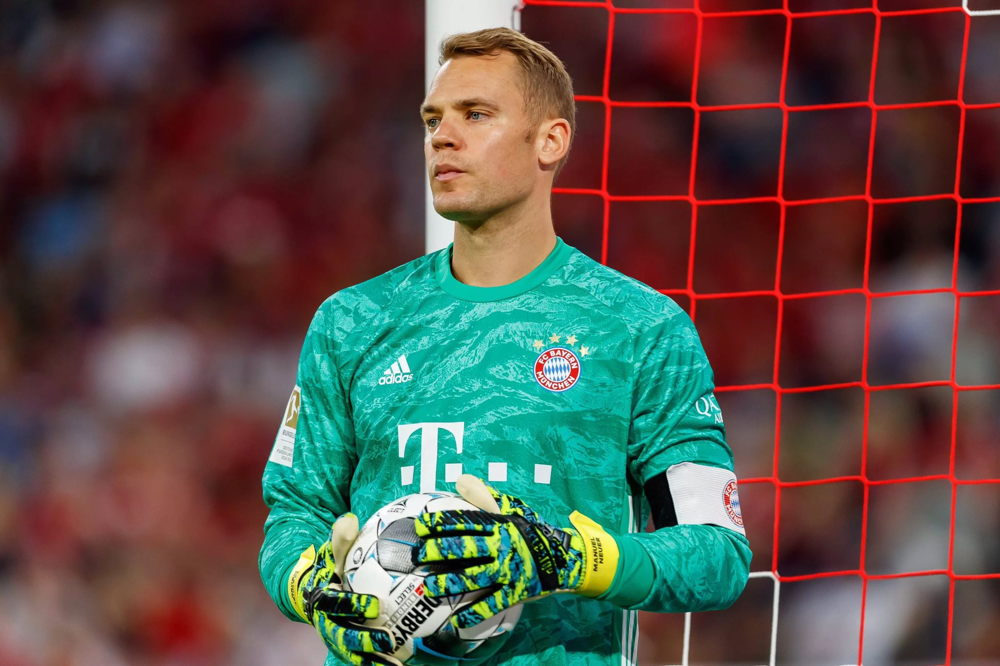
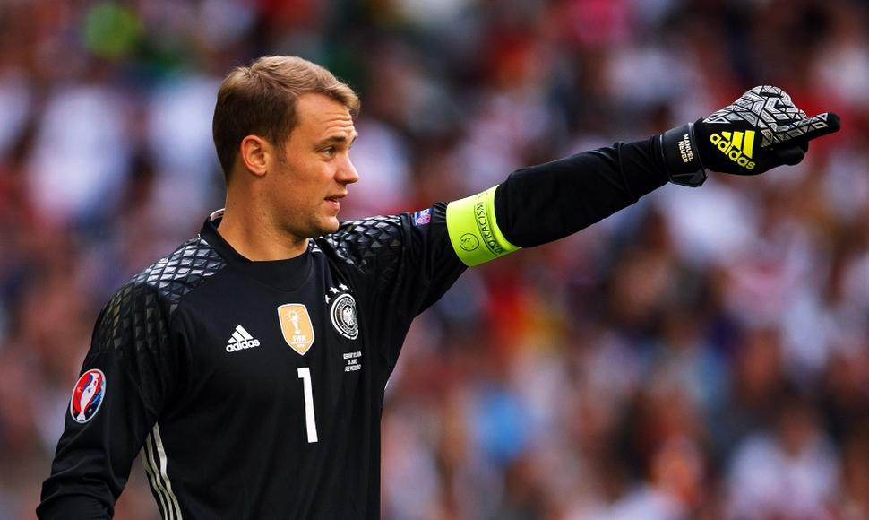

Manuel Peter Neuer (pronunciación en alemán: /ˈmaːnu̯eːl ˈnɔʏ.ɐ, -ɛl -/; Gelsenkirchen, Renania del Norte-Westfalia, 27 de marzo de 1986) es un futbolista alemán que juega como portero y su equipo actual es el Bayern de Múnich de la Bundesliga, primera división de fútbol de Alemania. También es internacional y capitán de la selección de Alemania. Es considerado como uno de los más grandes porteros de la historia del deporte, y por muchos considerado como el mejor de todos los tiempos. Neuer es descrito como el "sweeper-keeper" por su estilo de juego único y velocidad cuando se trata de salir de la línea de meta para anticipar a los oponentes, creando jugadas desde la portería. Es internacional absoluto con la selección alemana desde 2009, en la que es el portero titular y con la que ha disputado el Mundial de Sudáfrica 2010, la Eurocopa 2012, el Mundial de Brasil 2014, la Eurocopa 2016 y el Mundial de Rusia 2018. Fue elegido por la IFFHS como Mejor Portero del Año en 2013, 2014, 2015, 2016 y 2020. En 2014, además de ganar la Copa Mundial de Fútbol de 2014, fue nombrado guante de oro del campeonato, y también fue elegido en el once ideal del mundial Brasil 2014. En 2016, luego de la Eurocopa, sucedió a Bastian Schweinsteiger como capitán del seleccionado teutón.
2011-12
El 1 de junio de 2011, se anunció su traspaso al club alemán Bayern de Múnich a cambio de 18 millones de euros, firmando un contrato por cinco temporadas hasta 2016. Rápidamente se hizo con la titularidad en la portería del conjunto bávaro. Además, superó el récord de imbatibilidad de la portería del Bayern (llegó a 1.147 minutos), que tenía Oliver Kahn desde 1989 (1.012 minutos). El 25 de abril de 2012, se convirtió en uno de los protagonistas del partido de vuelta de las semifinales de la Liga de Campeones de la UEFA ante el Real Madrid al detener los penaltis lanzados por Cristiano Ronaldo y Kaká en la correspondiente tanda de penaltis, facilitando el pase de su equipo a la final de la competición. Después del partido, el presidente del club blanco Florentino Pérez le dijo a Karl-Heinz Rummenigge que Neuer era el Mejor Portero del Mundo. En la final, se enfrentaron ante el Chelsea, partido que perdió el Bayern, pero Neuer tuvo una buena actuación: Paró un penalti y convirtió su lanzamiento. Después del partido, él y sus compañeros recibieron la medalla de plata de la Liga de Campeones de la UEFA como subcampeones y además fue seleccionado como el mejor portero de la competición.
2012-13
Después de un tiempo de descanso, volvieron las competiciones nacionales e internacionales. En la Bundesliga ganaron los 8 primeros partidos (la primera vez que esto sucedía en la Bundesliga alemana). El 31 de octubre de 2012, ganaron 4-0 al Kaiserslautern para clasificarse a los octavos de final de la Copa de Alemania 2012-13. En la Liga de Campeones de la UEFA 2012-13, al Bayern le tocó en el grupo F junto al Valencia CF, Lille OSC y FC BATE Borisov. En el primer partido se tuvieron que enfrentar a los chés en el Allianz Arena. Ganaron 2-1 y se colocaron primeros de grupo, aunque poco después, el BATE les adelantaría por su victoria 3-1 ante el Lille. En la segunda fecha perdieron ante el BATE 3-1. A pesar de la derrota, siguieron segundos de grupo empatados a puntos con el Valencia, que ganó 2-0 a los franceses del Lille. Se enfrentaron al ya mencionado Lille y ganaron 1-0, pero el Valencia ganó también su partido y por mayor cantidad de goles, 3-0 y los tres de Roberto Soldado. Debido a esos resultados, el Bayern bajó a la tercera posición de la tabla y dejaron de estar clasificados. Los españoles se quedaron con la segunda. Reaccionaron y ganaron 6-1 al Lille para remontar y colocarse primeros, ya que el BATE perdió 4-2 ante el Valencia que siguió en la segunda y los bielorrusos se fueron a la tercera. Se clasificaron para los Octavos de Final en donde se enfrentaron al Arsenal, a los que ganaron por 3-1 en la ida. En la vuelta, los ingleses estuvieron fuertes y casi remontaron el resultado, pero finalmente pasó el Bayern. En los cuartos de final, se enfrentaron a la Juventus y ganaron por 2-0. El Bayern goleó 9-2 al Hamburgo en un partido de la Bundesliga. En la jornada 28, se proclamaron campeones de la Bundesliga a falta de 6 jornadas por la diferencia de 20 puntos con el Borussia Dortmund, ya que el Dortmund no podía alcanzar al Bayern aunque ganase todos los partidos restantes. En la vuelta frente a la Juventus, volvieron a ganar otra vez por 2 goles, consiguiendo así el pase del Bayern a Semifinales de la competición. Jugaron frente al FC Barcelona y golearon 4-0 en la ida. Ganaron 0-3 en la vuelta y consiguieron el pase a la final frente al Borussia Dortmund. Antes de esa final, se jugó un Borussia-Bayern de liga, donde Neuer ejerció como capitán y paró un penalti a Lewandowski. El partido acabó empate a 1. En la final de la Liga de Campeones, el Bayern ganó por 1-2 y se proclamó campeón.
2013-14
Empezó la temporada 2013-14 con una victoria por 15-1 ante el Bayern Fanclub Wildenau. En el segundo partido, ganaron 9-1 ante el TSV Regen. El 21 de diciembre, ganó la Copa Mundial de Clubes de la FIFA tras ganar en la final por 2-0 al Raja Casablanca, consiguiendo así ser la primera Copa Mundial de Clubes ganada por el Bayern y ser el primer equipo alemán que consigue ganarla. El 29 de octubre, la FIFA dio a conocer la lista para el Balón de Oro. Neuer fue incluido junto a jugadores como Iker Casillas, Lionel Messi, Cristiano Ronaldo, Radamel Falcao o Neymar. Finalmente, Neuer no llegó a ser finalista. El 4 de enero de 2013, la IFFHS dio a conocer la lista de los mejores porteros del mundo, y quedó en cuarto lugar por detrás de Petr Čech, Gianluigi Buffon e Iker Casillas. El 7 de enero de 2014, la IFFHS nombró a Neuer como el Mejor Portero del Mundo del 2013, superando en las votaciones a Gianluigi Buffon, Petr Čech y Thibaut Courtois, que quedaron en segundo, tercero y cuarto lugar, respectivamente.
2014-15
Neuer ganó el futbolista alemán del año, fue votado en el Equipo del Año de la UEFA, y terminó tercero en el FIFA Balón de Oro. Comenzó el 30 de enero de 2015, en la jornada 18, donde el Bayern perdió 4-1 ante el VfL Wolfsburg. Este es el primer partido de liga desde que se unió el Bayern en 2011, donde ha concedido cuatro goles en un partido. La última vez que el Bayern había concedió cuatro goles en un partido fue contra el Wolfsburgo en 2009. El 28 de abril de 2015, fue uno de los cuatro jugadores del Bayern que falló en la tanda de penales en la derrota 1:1 ante el VfL Wolfsburgo en la semifinal de la DFB-Pokal.
2019-20
Con el trofeo de la Liga de Campeones de la UEFA 2019-20 se convirtió en uno de los jugadores en conseguir dos tripletes en el Bayern de Múnich junto a Javi Martínez, David Alaba, Thomas Müller y Jérôme Boateng, entrado en el selecto club del que forman parte jugadores como Samuel Eto'o, Xavi Hernández, Andrés Iniesta, Lionel Messi y Gerard Piqué.